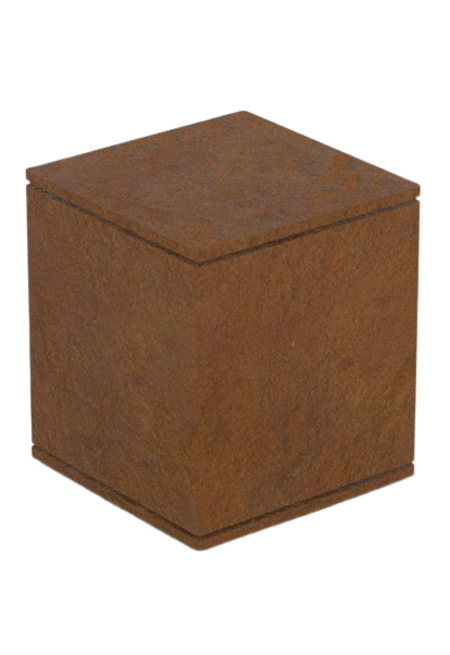

KruiKube Acier Corten
Matériau : Acier Corten
Prix : 49.99€
Dimensions : 16 x 16 cm
Description :
Ce KruiKube est le fruit d'années de recherches et développements de la part de notre équipe d'ingénieur. Aussi robuste que sa découpe est précise, vous serez satisfait de pouvoir calmer vos brûlures sur la froideur que la conception dégage.
Un Acier de qualité optimal
Chez Kruikube la qualité de notre metal est primordial.
Aucune oxydation n'est jamais apparu sur nos produits.
Contrairement à nos concurrents qui
en sont réduit à vendre des le départ des Kubes de couleur oxydée afin de tromper
malicieusement leurs pauvres consommateurs.
Ainsi parmis nos fournisseurs de métal on retrouve l'entreprise locale mais d'origine
anglaise : Corps-10.
Cette entreprise dirigé par l'ancien metallurgiste et amateur de Kubes de pétanque
(oui des Kubes monsieurs,
poins d'objet de type sphérique chez nous... MONSIEUR) à progressivement gagné une
réputation des plus nobles de par son ancrage à la fois local, mais également international
de par l'origine de son dirigeant qui comprend ainsi aisément notre language de start-up.
Mais nos ne nous reposons pas seulement sur la production locale, surtout pendant
les periodes d'oxydation tout les 10 du mois ou nos fideles partenaires de chez
Corps-10 sont davantage préocupé à philosopher sur le rapport entre le jour du mois
et le nom de leur entreprise, plutôt qu'à faire fondre le métal. De mon humbe avis
la seule chose qu'ils font fondre ces jour la, ce n'est ni le métal, ni le coeur des
dames, mais plutôt leur compte en banque. Enfin, moi ca ne me regarde pas après tout
et ils peuvent trés bien s'organiser comme ils veulent, mais bon moi de ce que j'en dit...
Enfin voila, c'est donc pour cela qu'en ces periodes ou tout les jours c'est un peu le
10 du mois,que l'immense, imposante, innovante et majestueuse multinational
May Thales cède son surplus de métal.
Surplus dont l'absence de non-qualité n'est pas à remettre en doute, puisque nous
nous occupons absolument pas d'en verifier la qualité mais avons delegué
cette tache à Jean Pierre Macintosh, dont la rancoeur envers May Thales
aprés son licenciement abusif nous assure qu'il ne leur laissera rien passer.
Nous avions quelques reserves quand au fait qu'il ne saboterai pas lui même la qualité
de leur production, mais aprés lui avoir accordé un pourcentage des benefices sur les
ventes au Mexique nous sommes convaincu d'avoir trouvé le juste milieu.
Ainsi cet accord tacite entre nos partenaires et notre humble société de Kruikube
scintillante de métal nous permet d'assurez à notre clientelle, c'est à dire vous, oui vous,
de posseder le kruikube le plus classe, le plus noble, et surtout le plus cher.
Car vous aussi vous aimez étaler votre richesse, vos rolex et vos costumes sur mesure.
Etça, nous l'avons bien compris, car nous vous avions... bien compris.
N'éhistez pas, visitez dès maintenants notre page Kruikube Plastique